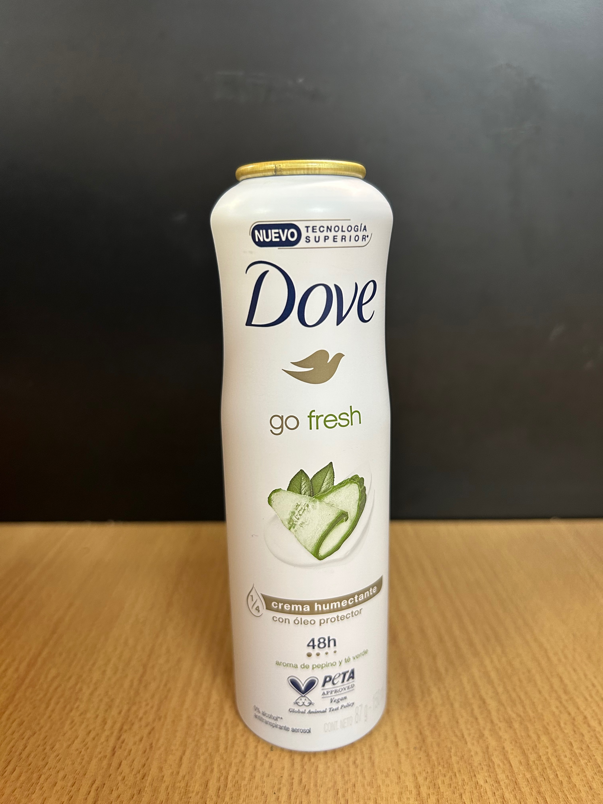

Dove es una marca de productos de belleza y cuidado personal fundada en 1955 en Chicago, Estados Unidos. Originalmente, la marca se enfocaba en la fabricación de jabones suaves y no irritantes para pieles sensibles. En el año 1957 se lanzó el famoso jabón Dove en barra con su fórmula única de 1/4 de crema hidratante. A medida que la marca creció en popularidad, se expandió a otros productos como desodorantes, champús y lociones para el cuerpo
